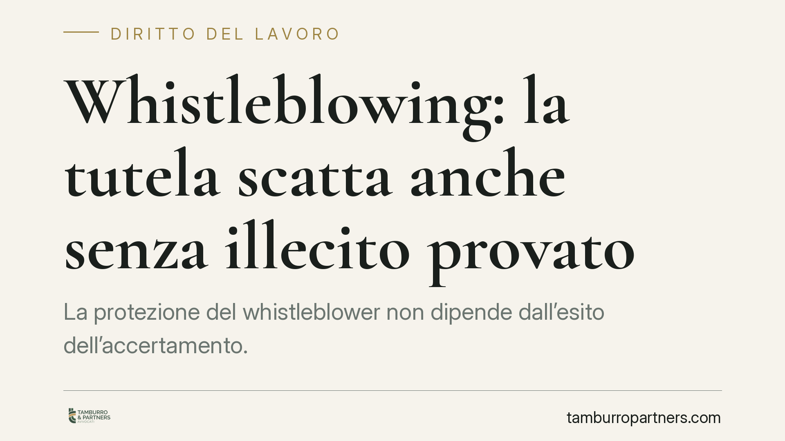

Whistleblowing: la tutela scatta anche senza illecito provato
La protezione del whistleblower non dipende dall'esito dell'accertamento. Secondo un recente orientamento della giustizia amministrativa, la tutela contro le ritorsioni opera anche quando l'illecito segnalato non viene provato in via definitiva, purché la segnalazione sia fondata su elementi concreti e fatta in buona fede. Un principio che ridisegna gli oneri di aziende ed enti.

Il caso
Un dirigente medico segnala condotte ritenute illecite all'interno dell'azienda ospedaliera. L'accertamento non si chiude con una prova definitiva dell'illecito. Nonostante questo, il giudice amministrativo riconosce che la protezione contro le ritorsioni resta valida.
Il punto centrale è questo: la tutela del segnalante non è subordinata al fatto che la violazione denunciata risulti poi effettivamente provata. Ciò che conta è la buona fede oggettiva del segnalante al momento della segnalazione, valutata sulla base di elementi concreti e verificabili, non su mere supposizioni.
Nel caso concreto, il giudice ha dato rilievo al fatto che il dirigente disponesse di indizi seri e circostanziati, tali da giustificare un "fondato motivo" di ritenere che la violazione si fosse verificata. L'eventuale interesse personale del segnalante non esclude di per sé la tutela, se la segnalazione poggia comunque su basi fattuali.
> Nota sulla fonte: la pronuncia è in corso di verifica quanto a numero ed estremi esatti. Indichiamo pertanto il principio di diritto senza citazione puntuale finché gli estremi non saranno confermati.
Inquadramento normativo
La disciplina organica del whistleblowing è contenuta nel D.lgs. 24/2023, che ha recepito nell'ordinamento italiano la direttiva (UE) 2019/1937 sulla protezione delle persone che segnalano violazioni del diritto dell'Unione.
Due norme vanno tenute distinte, perché la confusione tra le due è frequente e fuorviante.
L'articolo 16 fissa le *condizioni della protezione*. La tutela spetta a chi, al momento della segnalazione, aveva fondato motivo di ritenere che le informazioni fossero vere e rientranti nell'ambito di applicazione della normativa. La norma precisa che i motivi personali che possano aver indotto alla segnalazione non rilevano ai fini della protezione: ciò che conta è la ragionevolezza della convinzione, non la purezza dell'intento.
L'articolo 17 disciplina le *misure di protezione contro le ritorsioni*. Qui si colloca un meccanismo processuale decisivo: l'inversione dell'onere della prova. Quando il segnalante dimostra di aver subìto un atto pregiudizievole (licenziamento, demansionamento, trasferimento, mancata promozione) dopo una segnalazione, si presume che l'atto sia ritorsivo. Spetta al datore di lavoro provare che la misura adottata è fondata su ragioni estranee alla segnalazione.
Cosa aggiunge la pronuncia
Il dato normativo è chiaro sul "fondato motivo", ma lascia aperta una domanda pratica: cosa succede se, alla fine, l'illecito non viene provato?
Il contributo della pronuncia sta proprio qui. Il giudice chiarisce che la mancata prova definitiva dell'illecito non fa venir meno la buona fede né la protezione. La valutazione si sposta sul momento genetico della segnalazione: se allora esistevano elementi concreti sufficienti a giustificarla, la tutela regge anche di fronte a un accertamento che non arriva a conclusioni certe.
In altre parole, si separa nettamente il piano della *fondatezza della segnalazione* dal piano della *fondatezza della tutela*. Un esito investigativo incerto non si traduce automaticamente in una segnalazione pretestuosa.
Implicazioni pratiche
Per aziende ed enti il margine di manovra si restringe. Ogni misura organizzativa adottata nei confronti di un segnalante, anche se motivata da ragioni apparentemente neutre, può essere letta come ritorsiva. E sarà il datore a dover dimostrare il contrario, con documentazione solida e tracciabile.
Per i segnalanti, il messaggio è di maggiore certezza: la protezione non è una scommessa sull'esito dell'indagine, ma dipende dalla serietà e dalla buona fede della segnalazione.
Cosa fare in concreto
Per aziende ed enti:
- Documentate per iscritto le ragioni di ogni provvedimento che incida su un dipendente che abbia effettuato segnalazioni, costruendo una traccia che dimostri l'estraneità alla segnalazione.
- Verificate che il canale interno di segnalazione sia conforme al D.lgs. 24/2023 e garantisca la riservatezza dell'identità.
- Formate i responsabili HR e i dirigenti sul divieto di ritorsione e sull'inversione dell'onere della prova dell'art. 17.
Per i segnalanti:
- Conservate gli elementi concreti su cui si fonda la segnalazione (documenti, comunicazioni, date): costituiscono la base della buona fede oggettiva.
- Utilizzate i canali previsti dalla normativa e, in caso di atti pregiudizievoli successivi, raccogliete la documentazione utile a collegarli temporalmente alla segnalazione.
Consigliamo, in entrambe le posizioni, una verifica preventiva delle procedure interne prima che insorga un contenzioso.
---
Contributo informativo a cura di Tamburro & Partners Avvocati - Avv. Giuseppe Tamburro. Non costituisce parere legale.
Ogni storia di lavoro ha i suoi tempi.
Se gestisci HR e vuoi un confronto su contenzioso, ispezioni o licenziamenti, scrivi allo studio. Ti rispondiamo entro un giorno lavorativo.